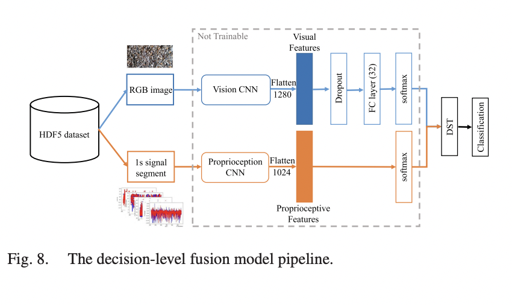

Codebase: GitHub - Causal_SAE
This study reverses the traditional sparse autoencoder (SAE) probing approach: instead of identifying features first, I intervene first, then observe how SAE features change. The goal is to test if SAE features track causally meaningful properties, particularly number agreement in language models.
Hypothesis:
Findings:
Steps:
Data Refinement: Switched to Marvin-Linzen dataset and filtered to 9-token sentences with environment control.
Observation: Agreement signal present by token 2; future analysis focused on token 7, layer 10 post-residual stream.
Highlights:
Corrected version (Experiment 4) applied interventions directly and checked for flipped outputs. Results inconsistent, requiring more investigation.
Features displayed threshold-like behavior. Above a certain epsilon, activation spiked, but no consistent monotonic trend was found.
FGSM on BERT layer 6 showed 6.25% feature overlap (top-k=32), indicating post-intervention feature sets were mostly distinct.
Overlap decreases with higher epsilon. Mid-epsilon showed high confusion (82% overlap), but at full concept flip, overlap drops significantly.
Counterfactual features emerged. Cosine similarity between features dropped as epsilon increased, showing feature flipping and possible degradation.
Post-deadline, corrected intervention patching offered a more targeted look at embedding transformations instead of activations.
Comments
Leave a Comment
Great overview of the current challenges in robotics! I'm particularly interested in the energy efficiency aspect. Have you looked into biomimetic approaches that might help with this? Many animals have evolved incredibly efficient locomotion strategies.
I work in healthcare, and I'm curious about how these challenges translate to medical robotics. The perception and manipulation challenges seem particularly relevant for surgical applications. Are there specific considerations for medical robots that differ from general robotics research?